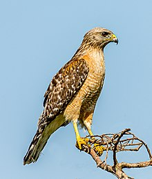

The red-shouldered hawk (Buteo lineatus) is a medium-sized hawk. Its breeding range spans eastern North America
and along the coast of California and northern to northeastern-central Mexico. It is a permanent resident
throughout most of its range, though northern birds do migrate, mostly to central Mexico. The main conservation
threat to the widespread species is deforestation.
